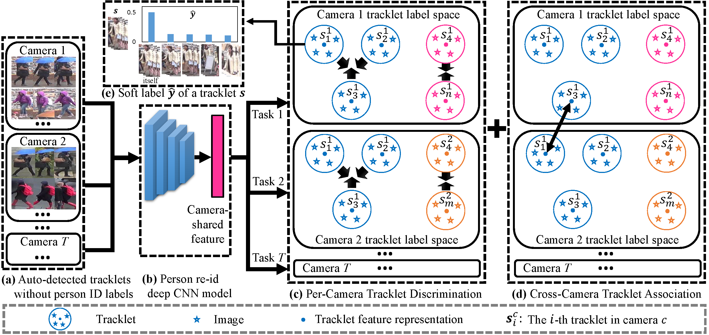
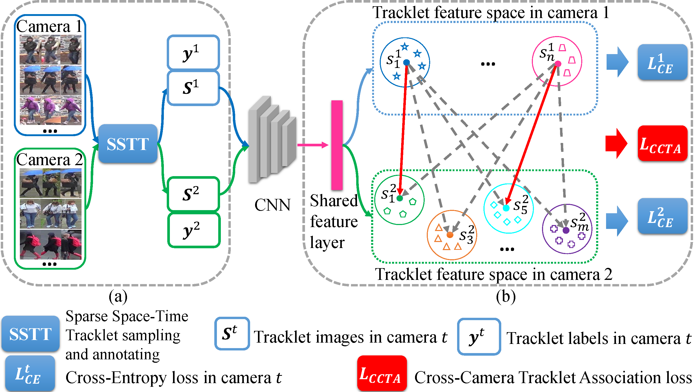
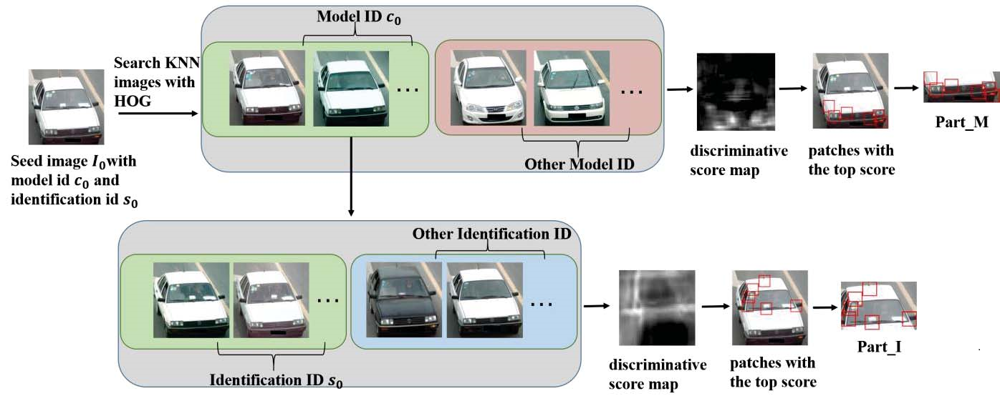
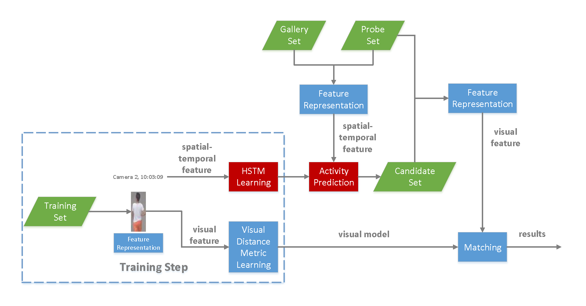

{kind=link}

|
|||||||||||||
| I am currently an Associate Professor in Faculty of Intelligent Science and Technology, at School of Computer Science and Engineering, Nanjing University of Science and Technology, China. In 2013, I received my Ph.D. degree in Pattern Recognition and Intelligent Systems from School of Computer Science and Engineering, Nanjing University of Science and Technology, China, under the supervisor Prof. Chunxia Zhao and Prof. Jinhui Tang. From 2017 to 2019, I worked as a visiting scholar and then a postdoctoral researcher supervised by Prof. Shaogang Gong in Computer Vision Group at School of Electronic Engineering and Computer Science, Queen Mary University of London, UK. |
Research Interests
Computer Vision, Machine Learning, Deep Learning, Unsupervised Learning
Applications: Person/Vehicle Re-identification, Object Detection and Tracking
Recent Publications (Full List, * is corresponding author)
|  | Unsupervised Tracklet Person Re-Identification Minxian Li, Xiatian Zhu, Shaogang Gong IEEE Transactions on Pattern Analysis and Machine Intelligence (TPAMI), 2019
|
|  | Unsupervised Person Re-identification by Deep Learning Tracklet Association Minxian Li, Xiatian Zhu, Shaogang Gong European Conference on Computer Vision (ECCV), 2018 (Oral) European Conference on Computer Vision (ECCV), 2018 (Oral)
|
|  | Part-based Multi-stream Model for Vehicle Searching Ya Sun, Minxian Li*, Jianfeng Lu International Conference on Pattern Recognition (ICPR), 2018
|
|  | Person Re-identification with Activity Prediction based on Hierarchical Spatial-Temporal Model Minxian Li, Fumin Shen, Jingya Wang, Chao Guan, Jinhui Tang Neurocomputing, 2018
|
Awards
2017 The First Prize (as an advisor), Vehicle Re-identification Challenge of China Postgraduate Innovation and Practice Competition (CPIPC)
2015 The Third Prize, Person Re-identification Challenge of IEEE International Conference on Multimedia Big Data (BigMM)
2014 The Third Prize (as an advisor), Person Re-identification Challenge of China Postgraduate Innovation and Practice Competition (CPIPC).
2011 The Third Prize (as a member), Jiangsu Science and Technology Award, China
Academic Services
International Conference on Intelligent Science and Big Data Engineering (IScIDE)
IEEE Transactions on Multimedia (TMM)
IEEE Transactions on Intelligent Transportation Systems (TITS)
IEEE Transactions on Information Forensics & Security (TIFS)
Neurocomputing - Elsevier
IEEE Signal Processing Letters (SPL)
Pattern Analysis and Applications (PAAA) - Springer
Journal of Visual Communication and Image Representation (JVCI) - Elsevier
Links
Shaogang Gong |
Jinhui Tang |
Xiatian Zhu |
Fumin Shen |
Jingya Wang